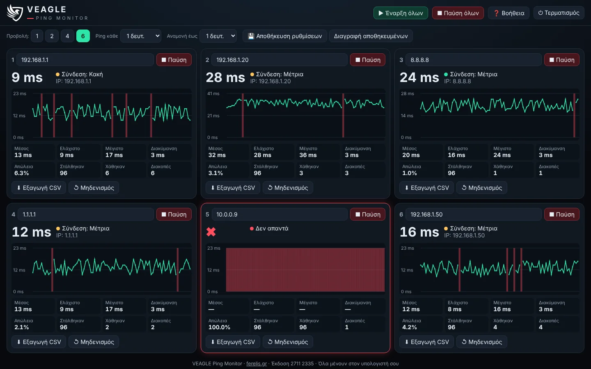
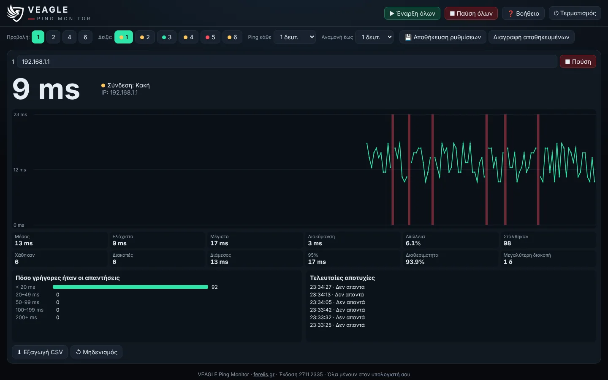
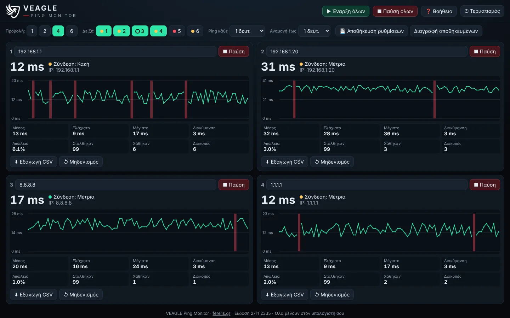

VEAGLE PINGMONITOR
VEAGLE PINGMONITOR
VEAGLE PING
Is it answering, and how fast? Watch up to six addresses on one screen. A free Windows program in one file: no install, no account.
Απαντάει, και πόσο γρήγορα; Παρακολούθησε έως έξι διευθύνσεις σε μία οθόνη. Δωρεάν πρόγραμμα για Windows σε ένα αρχείο: χωρίς εγκατάσταση, χωρίς λογαριασμό.
Download for WindowsΛήψη για Windows How to use itΠώς το χρησιμοποιώ
Six targets together. The numbers in the pictures are simulated demo data.
Έξι στόχοι μαζί. Οι αριθμοί στις εικόνες είναι δοκιμαστικά (προσομοιωμένα) δεδομένα.
What it doesΤι κάνει
1, 2, 4 or 61, 2, 4 ή 6
Choose how many targets you see at once. Hidden ones keep running.Διαλέγεις πόσους στόχους βλέπεις μαζί. Όσοι δεν φαίνονται συνεχίζουν.
Live statisticsΖωντανά στατιστικά
Current time, average, minimum, maximum, jitter, loss and outages, with a graph.Τρέχων χρόνος, μέσος, ελάχιστο, μέγιστο, διακύμανση, απώλεια και διακοπές, με γράφημα.
Detailed single viewΑναλυτική προβολή
With one target: median, 95%, availability, longest outage and the list of failures.Με έναν στόχο: διάμεσος, 95%, διαθεσιμότητα, μεγαλύτερη διακοπή και λίστα αποτυχιών.
Your local networkΤο τοπικό σου δίκτυο
Real ping to your router, computers, printers or cameras, and to internet addresses.Πραγματικό ping σε router, υπολογιστές, εκτυπωτές ή κάμερες, και σε διευθύνσεις στο internet.
Export to ExcelΕξαγωγή για Excel
Save the results of each target as a CSV file.Αποθηκεύεις τα αποτελέσματα κάθε στόχου σε αρχείο CSV.
Nothing by itselfΤίποτα από μόνο του
No ping starts until you press Start. Settings are saved only if you ask.Κανένα ping δεν ξεκινά πριν πατήσεις «Έναρξη». Οι ρυθμίσεις σώζονται μόνο αν το ζητήσεις.

One target with detailed statistics
Ένας στόχος με αναλυτικά στατιστικά

Four targets
Τέσσερις στόχοι
Your results stay with youΤα αποτελέσματα μένουν σε σένα
The program pings only the addresses you type. It sends no results anywhere and has no tracking. Its screen is served only to your own computer. It reads your router's address just to suggest it in the list.
Το πρόγραμμα κάνει ping μόνο στις διευθύνσεις που γράφεις εσύ. Δεν στέλνει αποτελέσματα πουθενά και δεν έχει παρακολούθηση. Η οθόνη του ανοίγει μόνο στον δικό σου υπολογιστή. Διαβάζει τη διεύθυνση του router μόνο για να σου την προτείνει στη λίστα.
How to use itΠώς το χρησιμοποιείς
- Click Download for Windows. One file, nothing to install.
- Double-click VeaglePingMonitor.exe. A black window opens, and the app appears in your browser.
- Type an address, for example 192.168.1.1 or google.com.
- Press ▶ Έναρξη (Start) and choose the view: 1, 2, 4 or 6.
- When you finish, press ⏻ Τερματισμός (Quit) or close the black window.
- Πάτα Λήψη για Windows. Ένα αρχείο, χωρίς εγκατάσταση.
- Κάνε διπλό κλικ στο VeaglePingMonitor.exe. Ανοίγει ένα μαύρο παράθυρο και η εφαρμογή εμφανίζεται στον browser σου.
- Γράψε μια διεύθυνση, π.χ. 192.168.1.1 ή google.com.
- Πάτα ▶ Έναρξη και διάλεξε προβολή: 1, 2, 4 ή 6.
- Όταν τελειώσεις, πάτα ⏻ Τερματισμός ή κλείσε το μαύρο παράθυρο.
Windows shows a blue “Windows protected your PC” warningΤα Windows δείχνουν μπλε προειδοποίηση «Τα Windows προστάτευσαν τον υπολογιστή σου»
This is expected for a new program without a paid code-signing certificate. If you downloaded it from this page and you trust it, click More info, then Run anyway. The source code is public, linked below.
Είναι αναμενόμενο για νέο πρόγραμμα χωρίς πληρωμένη ψηφιακή υπογραφή. Αν το κατέβασες από αυτή τη σελίδα και το εμπιστεύεσαι, πάτα Περισσότερες πληροφορίες και μετά Εκτέλεση ούτως ή άλλως. Ο κώδικας είναι δημόσιος, με σύνδεσμο πιο κάτω.
A device shows ✖ but it worksΜια συσκευή δείχνει ✖ ενώ δουλεύει
Many devices and websites are set not to answer ping. A Windows PC often blocks it with its firewall.
Πολλές συσκευές και ιστοσελίδες είναι ρυθμισμένες να μην απαντούν σε ping. Ένας υπολογιστής με Windows συχνά το μπλοκάρει με το Firewall.
LimitsΠεριορισμοί
IPv4 only, up to six targets. Statistics are lost when you close or reload the page, unless you export them.
Μόνο IPv4, έως έξι στόχους. Τα στατιστικά χάνονται όταν κλείσεις ή ανανεώσεις τη σελίδα, εκτός αν τα εξαγάγεις.
SHA-256 (VeaglePingMonitor.exe 2711 2335): 0be867624f2561974ceab862f39ed24083ccdd8e15d2f84731dec8bb61102c54
Terms of useΌροι χρήσης
Provided “as is”, free of charge and without any warranty. Use it on networks and devices you are allowed to check. It does not replace a professional monitoring system.
Παρέχεται «ως έχει», δωρεάν και χωρίς καμία εγγύηση. Χρησιμοποίησέ το σε δίκτυα και συσκευές που επιτρέπεται να ελέγχεις. Δεν αντικαθιστά επαγγελματικό σύστημα παρακολούθησης.